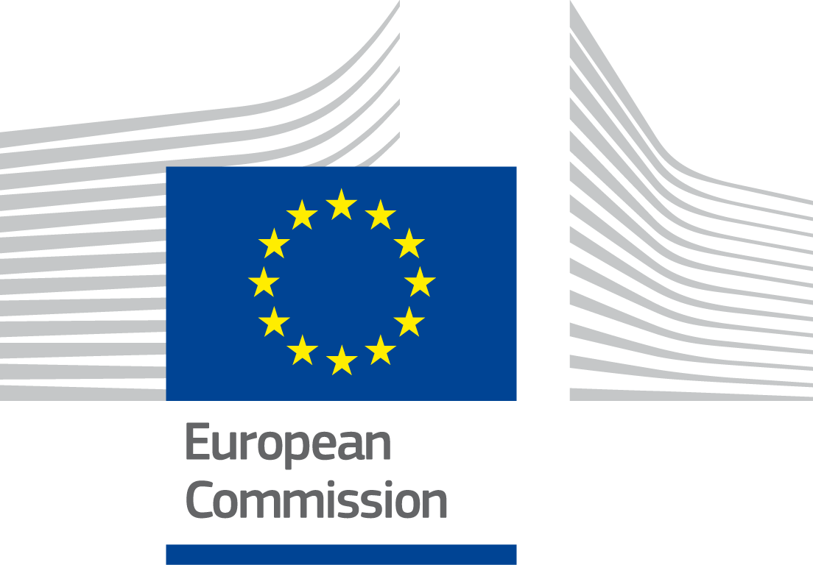
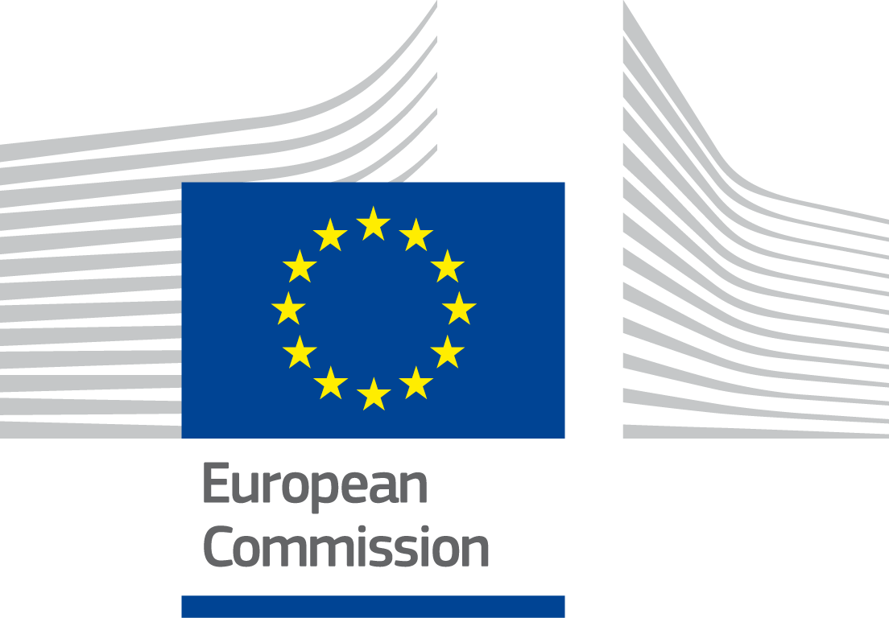

ISA2
Table of Contents

Digital Government Factsheet 2019
Czech Republic
ISA2
Country Profile 3
Digital Government Highlights 6
Digital Government Political Communications 8
Digital Government Legislation 14
Digital Government Governance 19
Digital Government Infrastructure 27
Digital Government Services for Citizens 35
Digital Government Services for Businesses 47
Country Profile
Basic data
Population: 10 610 055 inhabitants (2018)
GDP at market prices: 206 822 million Euro (2018)
GDP per inhabitant in PPS (Purchasing Power Standard EU 28=100): 89 (2017)
GDP growth rate: 3%
Inflation rate: 2%
Unemployment rate: 2.2%
General government gross debt (Percentage of GDP): 34.7% (2017)
General government deficit/surplus (Percentage of GDP): 1.5% (2017)
Area: 78 900 km²
Capital city: Prague
Official EU language: Czech
Currency: Czech koruna (CZK)
Source: Eurostat (last update: 15 March 2019)
Digital Government Indicators
The following graphs present data for the latest Digital Government Indicators for Czech Republic compared to the EU average. Statistical indicators in this section reflect those of Eurostat at the time the Edition is being prepared.
Digital Government State of Play
The graph below is the result of the latest eGovernment Benchmark report, which monitors the development of eGovernment in Europe, based on specific indicators. These indicators are clustered within four main top-level benchmarks:
User Centricity – indicates to what extent (information about) a service is provided online and how this is perceived.
Transparency – indicates to what extent governments are transparent regarding: i) their own responsibilities and performance, ii) the process of service delivery and iii) personal data involved.
Cross-Border Mobility – indicates to what extent EU citizens and businesses can use online services in another country.
Key Enablers – indicates the extent to which five technical pre-conditions are available online. There are: Identification (eID), Electronic documents (eDocuments), Authoritative Sources, and Digital Post. Digital Post refers to the possibility that governments communicate electronically-only with citizens or entrepreneurs through e.g. personal mailboxes or other digital mail solutions.
These top-level benchmarks are measured using a life-events (e.g. mystery shopping) approach. Eight life events are included in the overall eGovernment performance score. Four of these life events were measured in 2013, 2015 and 2017 and the other four were measured in 2012, 2014, 2016, and again in 2018. The life events measured in 2017 were Regular business operations, Moving, Owning and driving a car and Starting a small claims procedure. The life events measured in 2018 are Business start-up, Losing and finding a job, Family life and Studying.

Source: eGovernment Benchmark Report 2018 Country Factsheet
Digital Government Highlights
Digital Government Political Communications
The Government launched the programme Digital Czechia which covered three main concepts:
Czech Republic in Digital Europe;
Information Concept of the Czech Republic; and
Digital Economy and Society Concept.
Digital Government Legislations
Various Digital Government legislations was amended in 2018:
Act on Electronic Identification;
Act on Citizen Identity Cards;
Act on Information Systems of Public Administration;
Act on Public Procurement
Act on Base Registers;
Act on Electronic Communications and on Amendment to Certain Related Acts;
Act on Cyber Security;
Act on Health Services.
Digital Government Governance
Mr. Jan Hamáček became the Minister of the Interior.
Mr. Karel Havlíček became the Minister of Industry and Trade.
Digital Government Infrastructure
A new version of the Public Administration Portal was launched.
The Citizen’s Portal was launched, offering over 80 eServices to citizens.
The next phase of modernisation of the public administration communication infrastructure took place, and its central element is the central place of services 2.0.
The eIDAS node was launched in September 2018 under the name CZ.PEPS.
Since 1 January 2019, all contracting authorities are obliged to accept incoming eInvoices in ISDOC/ISDOCX formats.
Digital Government Services for Citizens and Businesses
Various new services are now available for citizens on the Citizen’s Portal:
Reservation system for filing applications for ID cards and travel documents;
Services of the Czech Social Security Administration (access to pension data, etc.);
Criminal record;
Electronic submissions for financial management (VAT control reports, tax returns);
Driver’s ranking listing;
Access to a list of properties owned by the user (preview of the cadastre);
Access to the patient’s drug account (eRecept);
Information on incapacity for work;
National eHealth contact point;
Submission of a request for information.
New services for citizens are also accessible on the Public Administration Portal:
Application for birth allowance;
Application for parental allowance;
Application for child allowance.
The Citizen’s Portal also made new services available for businesses:
Extract from the Trade Register;
A single registration form;
A non-public extract of the natural person’s business;
Extract from the list of qualified suppliers;
Extract from the insolvency register.
Digital Government Political Communications
Specific political communications on digital government
Digital Czechia
The Government Programme Digital Czechia focused on the Strategy of Coordinated and Comprehensive Digitisation of the Czech Republic 2018+. The main objectives of the programme were to ensure the readiness of entrepreneurs, public sector and citizens for rapid implementation and changes caused by digitisation, connectivity and digital structure and, last but not least, connectivity and trust in the digital environment. Digital Czechia covered three main pillars (partial concepts) which formed one logical whole. Every pillar had its own specific goals:
- Czech Republic in Digital Europe:
Institutional provision of coordination and financing of the implementation.
Ensuring communication on current topics and opportunities in the digital agenda.
- Information Concept of the Czech Republic:
User-friendly and efficient online services for citizens and businesses.
Digitally-friendly legislation developing an overall environment conducive to digital technology.
Increase of staff capacities and competences in public administration.
Efficient and centrally coordinated ICT for public administration.
- Digital Economy and Society Concept:
Functional financial and non-financial support for research, development and innovation.
The maturity and preparedness of the economic sectors for digital transformation.
Citizens' readiness to change the labour market, education and digital skills development.
Supporting the connectivity and infrastructure of the digital economy and society.
Ensuring security and confidence in the environment of the digital economy and society.
Legislation supporting all aspects of the digital economy and society.
Optimal system for financing the digital economy and society.
Institutional provision of central coordination of policies to support the digital economy and society.
The digitisation of public administration services.
Better public administration monitoring system.
Launch of the Citizen’s Portal as a transactional part of the Public Administration portal.
Implementation of eInvoicing.
Cross-border electronic identification.
Implementation of ongoing eHealth and eJustice strategies.
Strategic Framework of the Development of Public Administration in the Czech Republic
On 27 August 2014, the Strategic Framework of the Development of Public Administration in the Czech Republic for 2014 - 2020 was approved by the government by Government Resolution No. 680 of 2014. This strategy of public administration development formulated four targets to be further elaborated by the Government Council and achieved within the six-year period. Specified priorities covered public administration modernisation, which included the evaluation of its current functioning, proposing and implementing performance improvement measures, improvement of services availability via eGovernment tools, and continuous human resources professionalisation and development.
The implementation of individual measures and activities leading to the implementation of both specific and strategic objectives was, to a certain extent, interconnected.
In respect of the strategic objective No. 1: the modernisation of the public administration, a key task was, to optimise and streamline the performance of individual (selected) agendas, primarily via their initial mapping and subsequent standardisation. These activities would, at the same time, contribute to the reduction of the regulatory burden. The established quality management systems and the system of public administration evaluation subsequently identified the potential for further optimisation of the public administration system.
Currently, there is a preparation of a new conceptual material for the development of public administration called Client Oriented Public Administration 2030, which will follow the currently valid Strategic Framework for the Development of Public Administration in the Czech Republic for 2014-2020.
Key enablers
Access to public information
Digital Czechia and Strategic Framework of the Development of Public Administration in the Czech Republic
The Government Programme Digital Czechia follows and further elaborates the Strategic Framework of the Development of Public Administration in the Czech Republic for 2014 - 2020.
Both strategic documents aim for the development of eGovernment. The re-use of public information and Open Data issues are included in both of these programmes. One of the goals of Digital Czechia is Improvement of the National Catalogue of Open Data. The Strategic Framework of the Development of Public Administration in the Czech Republic 2014-2020 is solving the expansion, connection and consolidation of public administration data fund and its effective and safe use according to individual agendas and on the principle of open data.
There is a project for implementation of strategies in the field of open data in the Czech Republic.
eID and Trust Services
Digital Czechia
The Programme Digital Czechia includes the strategy of the implementation of full electronic submission using eIdentification, in accordance with the eIDAS and in compliance with a “digital by default” principle.
Strategic Framework of the Development of Public Administration in the Czech Republic
The Strategic Framework of the Development of Public Administration in the Czech Republic for 2014-2020 contains the eGovernment development, especially implementation of unified, state-guaranteed and within the EU interoperable eIdentification, authentification and authorisation system for the key information system according to the eIDAS.
Security aspects related to digital government
National Cyber Security Strategy of the Czech Republic
On 16 February 2015, the Director of the National Security Authority submitted to the government the new strategy with a main focus on the national cyber security of the Czech Republic for the next five years. It marked an important milestone for the Czech Republic in terms of cybersecurity. It differentiated itself from the preceding strategy with its qualitative shift from building up of basic capabilities necessary to ensure the basic level of cyber security towards those that are more advanced.
The Action Plan of the Strategy defined its concrete steps, deadlines, responsibilities and the supervision of their implementation. The main goals were divided into the following seven priority areas:
- Ensuring efficiency and strengthening of all structures, processes and cooperation in the field of cyber security;
- Active international co-operation;
- Protection of national Critical Information Infrastructure and Important Information Systems;
- Co-operation with the private sector;
- R&D/Consumer’s trust;
- Support to the education, awareness and the development of the information society;
- Support to the development of police capabilities to investigate and prosecute information crime.
Interconnection of base registries
Strategic Framework of the Development of Public Administration in the Czech Republic
The Strategic Framework of the Development of Public Administration in the Czech Republic for 2014-2020 includes the expansion, connection and consolidation of the public administration data fund and its effective and safe use according to individual agendas and on the principle of open data. The Digital Czechia Programme also covers the use and upgrade of base registries and their inter-connection.
The concept of Czech legislation is four base registers, but data from other public registers is used for the VS services and is linked to the core registries (e.g. driver register, criminal record, trade register).
eProcurement
Strategy of Electronisation of Public Procurement in the Czech Republic
The Strategy of Electronisation of Public Procurement for the period 2016-2020 is a conceptual document of the Government of the Czech Republic for the introduction of information and communication technologies into public procurement. It covers public procurement systems managed by the MRD, i.e. electronic public marketplaces, the National Electronic Instrument (NEN) and the Public Procurement Information System.
The strategy includes an evaluation of the functioning of electronic marketplaces of public administration and a proposal for further use, an evaluation of the National Electronic Instrument (NEN) and a proposal for its mandatory use by 2020 for all contracting authorities with the exception of individual certified electronic tools
Domain-specific political communications
International Competitiveness Strategy of the Czech Republic for the period (SMK)
The International Competitiveness Strategy of the Czech Republic for the period 2012-2020 (SMK) contains and sets out the initiatives and targets that relate to eGovernment and ICT modernisation of the public sector. The subtitle of the strategy, "Back to top", characterises the government's intention to become, by 2020, one of the twenty most competitive countries in the world. The strategy assesses the competitiveness of the country by taking action in nine pillars/sectors of the country. One of the main pillars focuses on the revamping of institutions, with the government envisioning to establish institutions that efficiently provide services to citizens and businesses and are free of corruption.
The relevant part of the strategy (pillar 2) on modernisation of institutions and public administration in general sets out the following objectives:
The systematisation and improvement of public administration by promoting professionalism and efficiency;
The efficient management of public assets and resources with a focus on tight control of public finances;
The simplification of public access to government services and information provided by public administrations;
The systematic improvement of the process of regulation and of the ability of the public to access legislation online.
The strategy outlines that these objectives will be tackled by:
Promoting effective governance;
Streamlining the management of public assets and resources;
Facilitating access to services of public administration;
Improving quality and availability control.
National Architectural Plan for eGovernment
The National Architecture Plan (NAP) and National Architectural Framework (NAF) are being prepared as a part of National Architecture of eGovernment. It aims to streamline the work of public authorities with information technology. NAP is an activity that includes not only central architectural models of shared services, but also individual models of public authorities. The aim is to prepare the initial state of Czech eGovernment with its development plan. Specifically, it is the modelling of central shared eGovernment services and individual systems and their services by public authorities. The Ministry of Interior will issue and publish the NAP and the NAF on its website by the end of September 2019.
National eHealth Strategy
The Ministry of Health of the Czech Republic declares a clear intention to gradually align the uncoordinated activities of the state, local government, commercial sector, health insurance companies and health service providers towards the vision of the National eHealth Strategy and to create an interoperable and trustworthy environment for all eHealth service providers.
Above all, however, the National eHealth Strategy, based on Czech and foreign experience, and using the principles promoted by the Czech Medical Society JEPurkyně, takes precedence over six principles:
The primary goal of eHealth development must be to benefit patients and the quality of healthcare.
The patient's right to adequate care, the protection of personal dignity and the protection of personal data must not be weakened but rather strengthened by the introduction of eHealth resources.
Doctors and other healthcare professionals need to be involved in projects already at the planning stage, in designing solutions. Expert opinion must be actively collected and appropriately taken into account in the projects.
Before implementing new eHealth tools and services, their usability, quality, stability and performance must always be sufficiently validated and evaluated.
The introduction of e-health on the basis of a flat-rate obligation is in principle incorrect. When introducing new eHealth services and tools, positive motivation needs to be used, and new technologies introduced gradually and judiciously so as not to jeopardize the continuity and safety of operations, patient threats or deterioration of health professionals.
Wherever possible and useful, all available scientific knowledge and proven technologies, including standards for exchanging and displaying medical information, should be used to create new solutions.
Resort Strategy for eJustice Development
The strategy is a long-term perspective for the area of eJustice. It describes and evaluates past achievements and failures in this field, identifies and analyses currently used information systems and technologies that have the potential for further development, completes them with suggestions arising from the practice of individual departments and experience of foreign courts and other organisations, and sets goals development in different variants.
GeoInfoStrategy
The Strategy of the Spatial Information Infrastructure Development to 2020 indicates the direction of the development of spatial information management and use in the public administration in the long-term horizon. It provides a basic concept of how to approach the challenges in the area of spatial information in the Czech Republic. It was formulated in line with principles of public administration spatial information management agreed at the EU level and in the PSI Directive and INSPIRE Directive. Implementation of the GeoInfoStrategy ensures that the Czech Republic keeps its international commitment in this domain.
Interoperability
Interoperability initiatives
Interoperability initiatives in public administration are supported by the Government of the Czech Republic which considers the digitalisation of public services as a national priority for the coming period. Implementation plans of the Strategic Framework of the Development of Public Administration in the Czech Republic for 2014 -2020 and implementation plans of the Government Programme Digital Czechia are part of these documents, describing specific projects that are to bridge existing gaps in this field.
The National Architecture Framework is under preparation, as is the National Architecture Plan that will define interfaces between public administration information systems.
New laws have been adopted and existing relevant legislation has been updated to reflect the eIDAS regulation and to ensure delivery of the secure and modern public administration eGovernment services.
Central government provides technological and methodological support to all public administration bodies in relation to open data publication and catalogues.
On a local level, both regional and municipal governments have developed digital strategies as part of the Strategic Framework for Public Administration Development.
Emerging technologies
Industry 4.0
Industry 4.0 (Průmysl 4.0) is a national initiative aiming to maintain and enhance the competitiveness of the Czech Republic in the wake of the Fourth Industrial Revolution. The concept was first presented during the 57th International Engineering Fair in Brno, September 2015. Big data issues, robotics, blockchain, 3D printing and the Internet of Things are dealt with, inter alia, within the Industry 4.0 Initiative.
National Artificial Intelligence Strategy
The Government of the Czech Republic approved the National Artificial Intelligence Strategy in 2019.
The basis for the strategy is an expert study Research on the Development of Artificial Intelligence in the Czech Republic. The strategy is divided into seven chapters and covers the areas of economy and society from support for science and research, through education and the social system, to the issues of regulation and international cooperation. The Deputy Prime Minister for the Economy has a leading role in AI in close cooperation with the Prime Minister. The aim is to connect both the public and the private sector, i.e. the representatives of the state, companies and academia.
On 10 April 2018, the Czech Republic signed a Declaration of Cooperation on Artificial Intelligence on the EU-level.
Memoranda of Cooperation
The Czech Government signed two memoranda in 2018 on cooperation between the Office of the Government, Ministry of Industry and Trade and, on the one hand, the AI Platform and on the other hand, the Blockchain Republic.
Digital Government Legislation
Specific legislation on digital government
Law on the right to digital services
In 2018 the Law on the Right to Digital Services was approved. It governed the right of Czech citizens to be provided with digital services by public authorities, the obligation of public authorities to provide digital Services and other rights and obligations related to the provision of digital services.
Key enablers
Access to public information
Act on Public Administration Information Systems
The Act on Public Administration Information Systems (Act No. 365/2000 Coll.) was adopted on 14 September 2000 and was last amended in 2018. It defined the rights and obligations of all persons and bodies involved in the development of Public Administration information systems. It further established the management framework concerned with the creation, use, operation and development of information systems. A first amendment to this Act was adopted in September 2007 by the Parliament with the aim to reduce excessive administrative burden for citizens through the Czech POINT network, through which the general public can obtain transcripts and information statements from the national registers. Furthermore, this amendment stated that all public authorities had to make their websites accessible for the disabled, thus incorporating eAccessibility into Czech legislation.
New provisions dealt with public administration systems’ governance, economic effectiveness and security. The Ministry of Interior now has the long-term ICT governance coordinator governor role as part of the Information conception of the Czech Republic, which was approved by the government. Several additional types of public administration internal operations systems were included under the category of “public administration information systems” regulated by law. These are, for example, information systems supporting public administration's HR management and remuneration, internal document management, accounting and email.
Act on Free Access to Information
An amendment to the Act on Free Access to Information (Act No. 106/1999 Coll.) was adopted by the Government on 12 May 2005 with a view to transpose the EU Directive 2003/98/EC on the re-use of public sector information (PSI Directive). This amendment set out the obligation for Public Administrations to provide online access to information in open data formats (e.g. XML). The amendment came into force on 1 January 2006.
This Act established the legal basis for the national open data catalogue as a “public administration information system” and the central national platform for public administration open data. The catalogue is operated by the Ministry of Interior and more than 129,000 data sets have been already published. The Ministry of Interior provided guidelines for open data publication and cataloguing standards used by other public administrations at central, regional and local levels.
According to the Legislative Tasks Plan of the Government, the Ministry of the Interior elaborated the Draft of the change of the Act about free access to information. The Draft transposed the Directive of the European Parliament and Council 2013/37/EU from 26 June 2013 into the Czech legal order. The Draft contributed to a more effective publishing of public sector information and its reuse. This was due to the obligation of information publishing in open and, when possible, machine-readable data format, or through implementation of the agreement institution about the facilitating of permanent information access.
The Government of the Czech Republic approved this Draft on 14 January 2015 by Decree no. 17. It obliged the Minister of the Interior to elaborate the final wording of the governmental draft of the Act. The amendment was approved under Act No. 222/2015 Coll., reflecting recommendations and requirements of the European Union. The amendment to the Act went into effect on 10 September 2015.
An amendment of the Act No. 106/1999 Coll. on Free Access to Information was passed. This defined the national open data catalogue as a public administration information system and the central platform for open data in the Czech Republic. It defined public administration obligations for bodies to publish certain information as open data. The Government Regulation is under preparation, which will define the obligatory data sets list. This regulation is currently in the intersectoral consultation process.
eID and Trust Services
Act on Electronic Identification
The Act on Electronic Identification (Act No. 250/2017 Coll.) codified the rules for using ID cards with a chip, in line with EU Directives. The functioning of the system, effective from 1 July 2018, was supervised by the Ministry of Interior, which issued respective accreditations to service providers.
Act on Citizen Identity Cards
The Act on Citizen Identity Cards (Act No. 195/2017 Coll.) defined the role of the National Registers Authority and National Identity Authority.
Act on Trust Services for Electronic Transactions
The Act on Trust Services for Electronic Transactions (Act No. 297/2016 Coll.) brought the Czech Republic closer to implementation of the eIDAS regulation. According to this Act, the Ministry of Interior must fulfil the tasks of a supervisory body over qualified trust service providers.
Security aspects related to digital government
Act on the Protection of Personal Data
The Act on Data Protection (Act No. 101/2000 Coll.) was adopted in April 2000 with the aim to protect citizens’ right to privacy. It regulated the rights and obligations regarding the processing of personal data and specified the conditions under which personal data may be transferred to other countries. Furthermore, it allowed individuals to access and correct their personal information held by public and private bodies. It was enforced by the Office for Personal Data Protection. It was last amended in 2011.
Act on Cyber Security
The Act on Cyber Security (Act No. 181/2014 Coll.) and on the Amendments of the Related Acts (Cyber Security Law) was published in the Collection of Laws on 29 August 2014 and became effective as of 1 January 2015.
The Act on Cyber Security put into practice a set of powers and duties to enhance cyber security. It defined the mechanism of active cooperation between the private sector and the public administration to increase the efficiency of dealing with cyber security incidents. This Act focused on protection of the critical infrastructure, which is important for the functioning of the state and disruption of which would lead to the damage or threat to the interests of the Czech Republic.
Interconnection of base registries
Act on Base Registers
The original Act on Base Registries (Act No. 111/2009 Coll.), at its time considered a “cornerstone” of the Czech eGovernment, was altered in 2016 by means of Act No. 192/2016 Coll. Applied changes impact all base registers, i.e. the registers of natural and legal persons, register of territorial identification, addresses and real estate as well as register of rights and responsibilities of public administrations. These amendments built on the positive impacts of previous legislation adding provisions reflecting current eGovernment infrastructure needs.
The original act established the legal, organisational, informational and partially technical interoperability aspects of national Base Registers. Detailed technical interoperability issues were solved via supporting documentation and guidelines provided by the National Registers Authority.
The latest amendment allowed private sector access to base registries’ data, under specific conditions. Prior to the amendment, only public administrations were given this access, based on the services that they are authorised to provide. The new legal provisions of the act also supported sharing and re-use of public administration systems at the national level, recommending the re-use of a single identification, authentication and authorisation solution used in central public administration systems known as JIP/KAAS. The law targeted the four base registries considered the cornerstones of the Czech eGovernment system, which were, according to Article 3, the Registry of Natural Persons (ROB), the Registry of Economic Entities (ROS), the Registry of Territorial Identification, Addresses and Real Estates (RUIAN) and the Registry of Rights and Duties (RPP). This law represented the legal basis for the National Registries Authority and sets out its principal activities. This organisation controlled access to base registries and kept records of entries. The law provided a complete list of the authority’s responsibilities in Articles 6 and 7.
Act amending certain acts in connection with the adoption of the Act on Basic Registers
The Act amending certain acts in connection with adoption of the Act on Base Registries (Act No 227/2009 Coll.), modified over a hundred related agenda (subject) laws and defined the rights and duties related to information editing, publishing and receiving data through the System of Base Registries. In fact, this law introduced base registries as defined by Act No. 111/2009 Coll. into operation in other agendas of public services and created a cooperative network of various agendas around base registries including rules for information interoperability.
eProcurement
Act on Public Procurement
The Act on Public Procurement (Act No. 134/2016 Coll.) entered into force on 1 January 2018. This Act incorporated relevant European Union legislation and regulates:
Public procurement rules, including specific procedures prior to their award;
The obligations of suppliers in the award of public contracts and the specific procedures prior to their award;
Public procurement information;
Special conditions for invoicing for the performance of public contracts;
Specific grounds for terminating public service contracts;
A public procurement information system;
A system of qualified suppliers;
A system of certified suppliers;
Supervising compliance with this law.
The eProcurement Platform used is called Národní elektronický nástroj (NEN).
Decree on Laying Down Detailed Conditions Relating to Electronic Tools and Acts Taken Electronically in Awarding Public Contracts and Particulars Concerning Certificate of Conformity
The former Public Procurement Act (Act No. 40/2004 Coll.), which was passed on 17 December 2003 and entered into force on 1 May 2004, established the obligation for public bodies to publish tenders electronically. It also made it possible for candidate suppliers to submit tenders by electronic means. The Government has so far not formulated an exact timeframe for the implementation of EU Directives on public procurement (2004/17/EC and 2004/18/EC), including their provisions related to eProcurement.
The Act on Public Procurement (Act No. 137/2006 Coll.), which entered into force on 1 July 2006 and abrogated the 2003 Act, was amended by Decree No. 9/2011 of 10 January 2011. This Decree provided for detailed conditions relating to electronic tools and acts taken electronically in awarding public contracts, as well as particulars concerning conditions for the issue of the certificate of conformity, its data and validity.
eInvoicing legislation
The Act on Public Procurement (Act No. 134/2016 Coll.) transposes EU legislation related to public procurement, including the Directive 2014/55/EU on electronic invoicing in public procurement, into national legislation.
Section 221 of the Act stipulates that contracting authorities shall not reject any electronic invoice issued by an economic operator if it is issued in a format compatible with the European standard on electronic invoicing.
Domain-specific legislation
Act on Electronic Actions and Authorised Document Conversion
The Act on Electronic Actions and Authorised Document Conversion (Act No. 300/2008 Coll.), effective since 1 July 2009, was last amended in 2016. It defined the provisions for the use of certified eSignatures. It stated that each eDocument must bear a guaranteed eSignature. The entire data box system (the Information System of Data Boxes) must work in a secure and guaranteed method. Any messages sent from a data box have to be provided with a time stamp and electronic mark (which is analogous to a guaranteed electronic signature), with all attachments time-stamped and marked accordingly. For activities carried out with public authorities, this eSignature is equal in all respects to that of a hand-written alternative in certifying official documents.
The Act was amended in 2016. The main change related to the mandatory use of the national eDelivery tool, the data box, for the auditors. According to this amendment, as from 1 July 2017, the data box service was activated automatically for auditors, who did not need to apply for it individually. Companies, SMEs and entrepreneurs were now able to communicate with auditors using this state-guaranteed secure eDelivery service.
Act on Certain Information Society Services
The Act on Certain Information Society Services (Act No. 480/2004 Coll.) was adopted and came into force on 7 September and was last amended in 2012. It built on the efforts of the Government to eliminate obstacles hindering the development of electronic commerce. In addition, it transposed the EU Directive on electronic commerce (2000/31/EC) into national law, as proposed by the 'White Paper on electronic commerce', approved by the Government in May 2003. The Act governed the liabilities, rights and obligations of persons providing information society services and disseminating commercial communications.
Act on Health Services
The Act on Health Services (Act No. 372/2011 Coll.) regulated the health services and conditions of their provision and the combined performance of the State administration, types and forms of health care, the rights and obligations of patients and persons close to patients, health service providers, healthcare professionals, other professionals and other persons in connection with the provision of health services, conditions for evaluation of the quality and safety of health services, and other activities related to the provision of health services and incorporated Relevant European Union legislation.
Interoperability
Interoperability in legislation
The Czech Republic does not have a single document that explicitly describes the national interoperability framework. However, interoperability of public administration systems is safe-guarded by different laws and regulations such as the Act on Information Systems of Public Administration, the Act on Free Access to Information and the Act on Archiving and Records Management. Furthermore, different strategic documents deal with the eGovernment principles and goals.
Emerging technologies
No legislation was adopted in this field to date.
Digital Government Governance
National
Policy
Ministry of the Interior
Since mid-2007, all eGovernment activity (e.g. policy formulation) has been firmly positioned in the Ministry of the Interior, as one of the six main activities of the Ministry. eGovernment focuses on public service delivery and the reform of government and is distinct from general information society policy. Political responsibility lies with the Minister and the Deputy Minister for Strategies and Programme Management under the Ministry.
The chief architect of eGovernment at the Ministry of Interior continues to perform its guidance and supervision role in respect to the central, regional and local public administrations to ensure compliance with the National Architecture Plan as well as with ICT systems and services sharing and reuse principles. The department continues to publish shared service models (templates) differentiated by the type of public administration, using enterprise architecture principles.
 | Jan Hamáček Minister of the Interior Contact details: Ministry of the Interior Postbox 21 Prague 7 - Letná 170 34 E-mail: ministr@mvcr.cz Tel.: +420 974 833 151 Source: http://www.mvcr.cz/ |
| Jaroslav Strouhal Deputy Interior Minister for Information and Communication Technologies Contact details: Ministry of the Interior Nám. Hrdinů 1634/3 Prague 4 140 21 E-mail: jaroslav.strouhal@mvcr.cz Tel.: +420 974 817 702 Source: http://www.mvcr.cz/ |
Ministry of Industry and Trade
According to Government Resolution No. 723, 18 September 2013, which established the next steps in the implementation of the International Competitiveness Strategy of the Czech Republic for the period 2012-2020, the agenda for the implementation of the Strategy was transferred back to the Ministry of Industry and Trade. The Strategy is based upon a number of pillars/priority areas, with one of the main ones being the modernisation of institutions and public administration using ICT.
 | Karel Havlíček Minister of Industry and Trade Contact details: Ministry of Industry and Trade
Na Františku 32
Prague 1
110 15 E-mail: karel.havlicek@mpo.cz Tel.: +420 224 851 111 Source: https://www.mpo.cz |
Government Council for Information Society and the Government Council for Public Administration
According to Government resolution No. 961 of 24 November 2014, two expert advisory bodies were established, the Government Council for Information Society, and the Government Council for Public Administration. Both Councils perform the role of permanent advisory, initiation and coordination body to the Government.
Since 2007 and until this government decision was made, the relevant agenda was performed by the predecessor of both Councils, the Government Council for the Competitiveness and Information Society. By dividing this rather large and very important agenda between two separated yet effectively cooperating bodies, the government expects to achieve a better focus and more effective coordination. Another driver behind the decision was the need to focus on continuous eGovernment and public administration development in line with defined priorities and strategic national and EU documents.
On 14 February 2018, the Decree of the Government of the Czech Republic No. 110 changed the statute of the Council and established the function of the governmental ambassador for information technology and digitisation, which is also the President of the Council. Vladimír Dzurilla was appointed to this new feature
Coordination
Ministry of the Interior
The Ministry of the Interior coordinates the development and implementation of eGovernment, with emphasis placed on public administration information systems and the public administration portal. It also contributes to the promotion of the information society as a whole.
Government Council for the Information Society
The Government Council for the Information Society is mainly responsible for coordinating the implementation of the Strategic Framework of the Development of Public Administration in the Czech Republic for 2014 - 2020. It contributes to higher transparency of ICT procurement in the public authorities. It breaks down current shortcomings in the system of ICT proceeding in the public administration, it helps to reach political consensus on the ICT conception and it replaces the central authority with standardisation competences and ICT development governance in the public administration and local governments.
The activities of the Council also bring significant savings due to new implemented provisions. The Ministry of the Interior has the leading and strategic role in the Council. The Council contributes to implementation of unanimous rules for approving investment intentions and rules of purchase of ICT products and services.
Department of eGovernment
The Department of eGovernment is situated within the Ministry of the Interior and is responsible for drafting and implementing the national eGovernment strategy together with other public administrations. The Department is responsible for implementation of key eGovernment projects, and administration of several central information systems. It provides support and guidelines to the Czech POINTs, the national network of public administration contact points. It also actively participates in the process of drafting national eGovernment legislation.
| Roman Vrba Director of eGovernment Department Contact details: Ministry of the Interior Nám. Hrdinů 1634/3 Prague 4 140 21 E-mail: roman.vrba@mvcr.cz Tel.: +420 974 817 544 Source: http://www.mvcr.cz/ |
Implementation
Ministry of the Interior
The Ministry of the Interior is responsible for implementing national eGovernment infrastructure projects and projects related to digital services.
Department of eGovernment
One of the current projects of the Department of eGovernment is the process modelling of public administration agendas with the aim to prioritise services that will become fully digitised and standardised across the country. The department is also responsible for implementation of the new Citizen's Portal as a transactional part of the Government (Public Administration) Portal. The department administers the Contract Registry and provides user support. The eGovernment department also performs the role of technical administrator of the national identity scheme in compliance with the eIDAS regulation.
Support
Ministry of the Interior
The Ministry of the Interior provides support to other Government departments and bodies for the implementation of their eGovernment projects.
Government Council for the Information Society
The Government Council for the Information Society is an expert advisory body made up of senior officials and major stakeholders in key institutions of the Public Administration and local governments who are involved in ICT and the implementation of eGovernment. It aims to support the development of the information society by creating a platform for discussing strategies and projects of the respective Government departments. Furthermore, it deliberates over materials submitted to the Government for ICT implementation and for the computerisation of the Public Administration.
For effective work of the Council, the following working groups were set up:
Executive Committee for the Czech Republic in Digital Europe,
Executive Committee for the information concept of the Czech Republic,
The Executive committee for the Digital Economy and society,
The Executive Committee on horizontal cooperation.
Base registry coordination
National Registries Authority
The National Registries Authority provides necessary organisational and technical support to public administrations, their system administrators and system developers. The National Registries Authority ensures for proper interoperability between their registered systems and the four base registries, through the Information System of Base Registries. Furthermore, it includes instructions and guidelines to be followed in order to achieve interoperability. These can be retrieved in the form of:
A global architecture description of the base registries;
A catalogue of services of the external interface of the information system of base registries, ensuring the data exchange between systems as well as access rights management;
A list of data elements used in the information system of base registries, in terms of data semantics in public administration;
An operation manual of the information system of base registries;
A description of the processes and conditions for the interconnection of registered public administration systems and the information system of base registries; and
A “reference agenda” tool and test data for system developers.
| Michal Pešek Director of the National Registers Authority Contact details: Správa základních registrů/National Registers Authority Na Vápence 14 Prague 3 130 00 E-mail: szr@szrcr.cz Tel.: +420 236 031 751; +420 236 031 759 Source: http://www.szrcr.cz/kontakty |
Czech Office for Surveying, Mapping and Cadastre (CUZK)
The Czech Office for Surveying, Mapping and Cadastre (CUZK), is the administrator of the base registry of Territorial Identification, Addresses and Real Estates (RUIAN). CUZK cooperates with relevant local municipal, cadastral and building offices and municipal councils. CUZK coordinates and manages all the processes concerning information collection and distribution for RUIAN and coordinates the large network of cadastre offices, municipal offices, local and specialised building authorities, and local councils when editing RUIAN. CUZK’s rights and duties are defined in Act No. 111/2009 Coll. and the Decree No. 359/2011 on RUIAN. Local cadastre offices are primary editors of information using for that function the Cadastral Information System (ISKN). The other local or specialised editors contribute with particular data in their territorial and subject competence through the Information System of Territorial Identification (ISUI).
Czech Statistical Office (CSO)
The Czech Statistical Office (CSO), in cooperation with relevant local administrations, is the administrator of the Legal Persons Registry (ROS). CSO defines and manages all the processes around information collection and distribution of ROS. CSO rights and duties are defined by the Act No. 111/2009 Coll. There is a network of various local, regional and central public offices working as primary editors of ROS and coordinated by CSO. Editing agencies are supported by more than 40 information systems connected to the System of Base Registries.
Ministry of Interior
The Ministry of Interior, in cooperation with relevant local administrations, is the administrator of the Registry of Natural Persons (ROB). The Ministry defines and manages all processes around information collection and distribution for ROB. Its rights and duties are defined by Act No. 111/2009 Coll., where the local councils are set as the primary editors of citizens’ information using the Agenda Information System (AIS).
Also, the Ministry of Interior, in cooperation with other central government administrations, is the administrator of Registry of Rights and Duties (RPP). The Ministry defines processes for agenda definition and registration. The actual registration is done by the responsible Ministry or other central offices. Part of the agenda description is a definition of access rights to information stored in base registries and other agendas. A short description of registered agendas and public offices working on those agendas is published as output from the RPP. Additionally, a list of editing agendas for different registries is also published from RPP.
Office of Personal Data Protection (OPDP)
There are four main base registers, based on the Act No. 111/2009 Coll. on Base registers, managed by different institutions, and the connection between them is ensured by the Office for Personal Data Protection (OPDP). These registers are governed by the Administration of basic registers. They are not interconnected with each other. The Office of Personal Data Protection is the administrator of the system of personal identifiers (ORG). It does not use a potentially exploitable birth number, but a randomly generated ID. That is why it is also called the identifier converter. The OPDP also defines and manages all the processes regarding the creation and changes of personal identifiers and manages the services for the personal identifiers (“AIFO”) usage. The office has no rights to access information from base registries except for the audit purposes.
Audit
Supreme Audit Office
One of the necessary conditions for the functioning of the modern democratic State is the existence of an independent body that controls its management. This role is fulfilled in the Czech Republic by the Supreme Audit Office, whose conception is based on the principles applicable to similar control institutions in Europe.
The Supreme Audit Office (SAO) is an independent institution that is responsible for auditing the management of public finances and State property. The National Audit Office (NKÚ) is one of the indispensable pillars of the democratic State.
The Existence of the NKÚ is enshrined in the Constitution of the Czech Republic and its activities and powers are regulated by Act No. 166/1993 Coll., on the Supreme Audit Office.
Data Protection
Office for Personal Data Protection
The Office for Personal Data Protection was established on 1 June 2000 as an independent administrative body in the field of personal data protection and deals with citizen grievances in this domain. The development of eGovernment services in the Czech Republic is further supported by the work of Czech office for Surveying, Mapping and Cadastre, Czech Telecommunication Office and the National Cyber and Information Security Agency. The office published its official journal, updated its website and regularly informed the public of its activities through the media.
Personal data protection is a special type of personality protection, especially privacy protection. The determination of the purpose of processing personal data must be assessed with regard to privacy. The Office for Personal Data Protection supervises the implementation of the Data Protection Act and compliance with the GDPR.
Subnational (federal, regional and local)
Policy
Individual Regions and Municipalities
Public Administration and the management of public services are decentralised in the Czech Republic. There are fourteen regions and 6,258 municipalities using central eGovernment infrastructure and services while also providing their own digital services to citizens. As such, regional and municipal authorities are responsible for defining eGovernment policies and strategies within their respective spheres of competence. The common approach is defined by the national eGovernment strategy as well as complementing strategies of the national Association of Regions and the Union of towns and municipalities. Both organisations promote the exchange of best practices between its members.
Coordination
Ministry of the Interior
The Ministry of the Interior is in charge of the coordination of municipalities in the eGovernment domain.
Department of eGovernment
The Department of eGovernment is responsible for the coordination of service development, implementation projects and regional activities in the computerisation of public administration with other state and local governments.
Implementation
Individual Regions and Municipalities
Within their respective spheres of competence, regional and municipal authorities ensure the implementation of their eGovernment strategies, while the central coordination is ensured by the central authorities and the Ministry of Interior.
Support
Ministry of the Interior
The Ministry of the Interior provides cities and municipalities with quality eGovernment services through technical solutions and support. The aim is to ensure that the implementation of eServices does not hinder the economic stability of cities and municipalities and their citizens and businesses have access to modern digital services regardless their location.
Union of Towns and Municipalities of the Czech Republic
The Union of Towns and Municipalities of the Czech Republic undertakes support and advisory activities for Czech local authorities, and promotes the interests of Local Administration in relation to central executive and legislative bodies.
National Registers Authority
The National Registers Authority, as part of the Czech eGovernment, makes it possible to centralise and keep the most common and widely used information up to date. This central administration body supports national public administrations, their system administrators and system developers, to ensure proper interoperability between registered systems and base registers.
Base registry coordination
Interconnection between Base Registries and Public Administration Information Systems
In terms of the Base Registries of the Czech Republic, the metainformation system (system where information about data, rights and duties are stored) is a Base register of rights and duties (also known as RPP). In terms of knowledge of the identifiers and links between the base registries, it is the ORG register (a conversion table of identifiers of natural persons between base registries and public administration information systems). In terms of communication management and technological assurance of interconnection between base registries and public administration information systems, this is the Base Registries Information System (also known as ISZR).
Audit
Supreme Audit Office
The Supreme Audit Office (SAO) is an independent institution that is responsible for auditing the management of public finances and State property.
Data Protection
Office for Personal Data Protection
The Office for Personal Data Protection is an independent agency which supervises compliance with personal data legislation and deals with citizen grievances in this domain. The development of eGovernment services in the Czech Republic is further supported by the work of Czech office for Surveying, Mapping and Cadastre, Czech Telecommunication Office and the National Cyber and Information Security Agency.
Digital Government Infrastructure
Portals
Public Administration Portal
The Public Administration Portal serves as an official single electronic gateway for citizens, businesses and institutions, enabling them to communicate with Public Administration entities. The portal gathers necessary information on central and local Government.
The portal will soon provide access not only to key public administration information, but also to available digital services grouped by life events. The transactional part of the portal called Citizen's Portal offers the option of digital identification, several fully automated digital services, provision of extracts from state base registers, information on the current status of individuals’ submissions to public administration as well as a personal archive of public administration-related documents. Personal identification and authentication at the Portal is to be done by the new national eID card.
Regional public administrations and municipalities, as well as local administrations, continue to improve their portal in order to provide up-to-date information on public services, opportunities and local tourist attractions. Individual portals are accessible from the central portal. Various digital services are available at the regional level, for example, citizens of Vysočina region can now make their online appointments to local health care providers, while the South Bohemian region provides an online UtilityReport service, which helps to obtain information on all utility networks at a particular location at once, as well as contact them online to request official statements.
On 3 January 2018, a new version of the Public Administration Portal was launched, one that corresponded to current user requirements for clarity and intuitive operation. The Portal was customised to display on a variety of devices including mobile phones. The content of the portal will be gradually updated to make it a place where everyone finds all necessary information related to the public administration. A number of issues are directly managed by the online applications available here.
In connection with the reconstruction of the PVS (Public Administration Portal), its transactional personified part called the Citizen's portal was built, which was launched on 1 July 2018.
Citizens’ Portal
In context with the reconstruction of the Public Administration Portal (PVS), its transactional personalised part, called Citizen’s Portal, was launched on 1 July 2018. The Citizen’s Portal will offer the citizen, in particular, the implementation of a full electronic submission, the provision of outputs from public administration information systems, information on the status of individual acts performed by a citizen against specific public authorities, and for example, a personal archive of documents. The Citizen’s Portal currently offers about 80 services such as: access to data in base registers, access to pension data, information on sickness insurance benefits, access to a patient’s drug account (eRecept), driver ranking listings, incapacity for work information, extract from the criminal record, request for information under the Act on Free Access to Information, the possibility to attach a data box of a natural person or a natural person doing business and to submit a document, storage of documents (e.g. attachments of data messages), access to a list of properties owned by the user, tax filings (VAT control reports, tax returns…) and other services. The development of the Citizen’s Portal will continue even after the project has been completed, e.g. the National Strategy the Digital Czechia included the Citizens Portal as a key objective and counts on its development at least until 2024.
Electronic Portal of Local Self-Governments (ePUSA)
The ePUSA is an information system that contains an up-to-date database of self-government entities in the territory of the Czech Republic. The system enables the selection of required data according to different criteria. The main objective is to satisfy the need for communication between the Public Administration and citizens while creating and operating a current repository of the Regional and Municipal Authorities and other administrative bodies (e.g., organisations established by these authorities). ePUSA is operated by the Ministry of the Interior.
Towns and Communities Online Portal (TCOP)
The TCOP is a nationwide tele-democracy website, which supports electronic information exchange between local governments and Czech citizens. It is administered in cooperation with the Union of Towns and Municipalities of the Czech Republic. The overall mission is to progressively develop user-friendly eServices in order to support digital communication between Public Administration and citizens. It engages citizens in the decision-making process via the use of various multimedia. The TCOP provides a complete list of Czech municipalities and a free database-driven homepage to each Czech Council.
Portal for Data Boxes
The Portal for Data Boxes was launched in June 2011 to provide a more comprehensive service to users of Data Boxes, which serve as a secure repository of official electronic communications with public authorities. The new portal provides, in one place, comprehensive information on, and the services for the information system of Data Boxes (ISDS). In addition, the portal provides users with several secure ways to log in, and also makes interactive electronic forms available. These changes are expected to significantly streamline the communication of citizens with the state.
Czech Social Security Administration
Citizens and employers can access their information registered in the Czech Social Security Administration’s databases, send their requests online and receive replies digitally. There are online services available for different groups of clients, i.e. individuals, employers, self-employed individuals, pensioners, physicians and social service facilities.
Services for individuals, for example, include online access to information on sick pay leaves during a person’s work career, information on health insurance payments for the self-employed individuals, online calculation of the retirement pension based on the insurance periods and other services. Currently, to access this personal information online, citizens need to identify and authenticate via the Data Box. In the near future, these services will also be available when the eID is issued as a personal identification means.
Networks
Public Administration Communication Infrastructure (KIVS)
The KIVS enables the interconnection of all Public Administration bodies (e.g. ministries, central administrations, regional authorities, municipal offices, labour offices, revenue authorities and public libraries), ensures secure and cost-efficient data and voice communications, as well as access to central information resources. Simply put, the KIVS is a combination of different data lines between public administration bodies in a single data network. The major benefit of the KIVS is that it streamlines services and leads to significant cost savings.
CzechPOINT network
The Czech POINT system is a network of one-stop access points to eGovernment services intended to prevent citizens from visiting several offices, thus significantly reducing excessive administrative burden. Through these one-stop points, the general public is able to access all public records and to obtain transcripts/extracts, as well as information statements from the national registers.
The Czech POINTs are primarily located at post offices, municipal authority offices, registry offices and Czech embassies. As of December 2018, the network is comprised of 7,461 local and regional physical contact points. An interactive map on the website serves as a Czech POINT location finder. By the end of 2018, the number of issued excerpts reached 21,021,279 million.
In the future, the accessibility of Czech POINT remotely from the Public administration portal will make it possible to obtain required documents from home. In this light, the Act on Electronic Actions and Authorised Document Conversion, which gives electronic documents the same legal status as traditional stamped hardcopy equivalents, will have significant impact on the effectiveness of the network. Since July 2009, Czech POINTs have been in charge of converting paper-based administrative documents into electronic form, processing applications for the establishment of personal Data Boxes and terminating/re-creating these Boxes, when needed and upon request.
Gradually more services are introduced, such as:
Validation of the Czech citizens identity is made possible at the CzechPOINT@office interface at the embassies of the Czech Republic abroad;
New map service makes it possible to find Czech POINT offices on the map, including the address and office hours;
E-mail alert service of the crime register is for those who applied for the excerpt from the crime register. The applicant can provide his email, to which an alert message is being sent when the excerpt is ready;
The Validation of the cadastral map image at the public administration contact point (i.e. any of the CzechPOINT offices), as well as on the CzechPOINT@office interface for clerks;
Excerpt from the Driver’s Point Account as a free service for the Data Box holders at the CzechPOINT@home interface and more.
New Technology Centre
Through its new Technology Centre, the Vysočina region provides several ICT services to the regional administration, its municipalities and organisations financed by the region. The centre is in two locations connected by two separate optical fibre cables. Among the services offered by the regional technology centre are a document management service, secure storage management, spatial information system, interface to central registers, and videoconferences for the regional and local administrations, eProcurement system, eHealth services and the services for the national integrated rescue system. The technology centre also provides a security dashboard of the region for the cybersecurity administrators of the regional information systems and the public wi-fi hotspots supporting the EDUROAM project.
Services 2.0
The next phase of modernisation of the public administration communication infrastructure took place, and its central element is the central place of services 2.0. It ensures mutual, controlled and secure interconnection of public and state administration entities, it also ensures communication of public and state administration entities with other entities in external networks such as the Internet or the EU communication infrastructure.
“What to do, when…”
The mobile application “What to do, when…” provides information on key government services for life situations of citizens. The application includes solutions to the following situations and related agendas:
Newborn baby;
Change of residence;
Loss of documents;
Family deaths;
Property transfer;
Localisation of the nearest Czech POINT;
My Office.
Data Exchange
'Data Box' Information System
A 'Data Box' is an eDelivery solution intended for delivery of official documents and for communication with public authorities. It is not obligatory for citizens and private individuals who carry out business activities; however, its establishment is obligatory for legal entities and public bodies (Public Administration). A document (data message) which is sent to a Data Box is delivered at the moment the authorised individual logs in. Delivery of the document has the same legal provisions as personal delivery. A Data Box is not an email box; it cannot be used to communicate directly with individual public sector clerks, only with an entire office, nor can it be used to communicate with another private individual, a private individual carrying out business activities and/or a legal entity.
With regards to natural persons (citizens), they are able to open their Data Box on a voluntary basis and use the contained documents in their dealings with public authorities. Citizens can access their Data Box at the Czech POINT network's one-stop contact points.
As of 1 November 2009, every Czech public body and legal entity registered in the Commercial Register is required to use Data Boxes in place of the traditional paper form. The Data Boxes information system is currently operational for other types of communication, namely C2C (citizen to citizen), C2B (citizen to business) and B2B (business to business) communications. To date, there are 975,937 accessible Data Boxes, while 648,119,378 messages have been sent through them, scoring a 99.5% average delivery successful login.
eID and Trust Services
eSignatures
The identification of persons, the authentication of documents on the Internet and access to several transactional electronic public services are based on electronic signatures. Currently, there are three certification service providers (First Certification Authority, Czech Post and eIdentity) accredited by the Government to issue eSignatures (qualified certificates, qualified system certificates and qualified time stamps) valid for communicating and transacting with the public administration. Their qualified certificates can be used for online transactions. eSignatures based on non-qualified certificates issued by other businesses can only be used for commercial services.
As the public administration’s central body competent for eSignatures, the Ministry of the Interior conducts regulatory, supervisory and accreditation activities with regard to electronic signature products and providers in the Czech Republic. On 17 June 2011, the Ministry of the Interior published an opinion on the making of copies of personal documents for issuing qualified certificates. The opinion was published claiming that in some cases, applicants are qualified to issue the certificate object to make copies of personal documents and require taking only extract data from these documents. The qualified provider of certification services is required, before issuing a qualified certificate, to securely verify the identity of the signing or designating person.
ePassports
Following a testing period, Czech authorities launched a first version of the Czech electronic passport at full scale in September 2006. On 1 April 2009, authorities started rolling out new electronic passports, which featured a chip that contained two biometric identifiers. Issued in compliance with the requirements laid down in the European Union Regulation regarding passport security and biometrics, the passports included new security features such as intricate designs and complex watermarks, as well as a chip and an antenna. The chip stores the electronic facial scan of the holder, in addition to personal details. Facial recognition maps various features. The addition of fingerprint details on the chip is being planned to take place at a later stage.
eID
On 1 July 2018, the amendment to the Civil Code Act (Act No. 195/2017 Coll.) became effective. The new electronic ID card is equipped with a contact electronic chip, on which the identification certificate of the identity card is already recorded during production and is a basic tool serving citizens for both presence and remote identification (online) with highest level of trust of the Czech Republic. Currently, with the use of electronic identity card, citizens are allowed to remotely use more than 80 services of the State, some on the condition of the existence of the data box.
Czech National Verification Authority (CVCA)
This CVCA is a public Certification Authority that meets the need for securing control systems accessing sensitive personal data on stored documents with biometric data. The aim of the CVCA is to provide certification services for public entities administering sets of inspection systems. The CVCA certificate policy stipulates the requirements relating to the activities, obligations and commitments of all participating parties that, directly or indirectly, come to contact with certification services or are dependent on them.
eProcurement
eProcurement portal
The Czech Republic has a centralised eProcurement system based on a national platform managed by the Public Procurement and Public Private Partnership Department of the Ministry for Regional Development. Contracting authorities are required to publish tender notices above the national threshold of EUR 76,000. The national platform is also mandatory for the ICT commodities and services purchases.
The public procurement legislation requires all public tenders and awards to be published on the free-of-charge eTenders portal. This obligation concerns State bodies as well as regional and municipal authorities. Information to be published on the portal includes public tender announcements, publication, results and cancellations of public tenders and price differences between received offers. The procedures for the notification and publication of these public tenders have been automated to a large extent.
Public Procurement and Concessions portal
The Public Procurement and Public Private Partnership Department of the Ministry for Regional Development has designed a portal where comprehensive and well-organised information relating to public procurement can be found. The user is provided with an opportunity to be orientated in national and European laws, regulations and administrative provisions concerning public contracts and concessions. Supply of information on eProcurement at both national and European levels is an innovative feature.
National Electronic Tool (NEN)
As part of the strategy adopted by the government in June 2017 Resolution No. 467, which obliges selected contracting authorities to use NEN from 1 July 2018 for public procurement. The implementation of these measures is expected to save several tens of millions of CZK on the operation of electronic public procurement tools.
eInvoicing
National eInvoicing Forum (NMFČR)
Since 1 January 2019, all contracting authorities are obliged to accept incoming eInvoices in a format as laid down in the resolution of the Government of the Czech Republic No. 347/2017 from all contractors. The formats stipulated are the ISDOC/ISDOCX (Information System Document) version 5.2 (and higher) format as well as the formats compliant with the European Directive No. 2014/55/EU.
The National eInvoicing Forum (Národní mnohostranné fórum ČR pro e-fakturaci) is a crucial organisation for implementation of eInvoicing in the Czech Republic. The NMFČR was founded in 2011 by Czech Chamber of Commerce (Česká Hospodářská komora ČR), in response to the European Union for reduction of trade barriers and boosting of economic activities at the framework of European cross-border co-operation.
The primary objectives of NMFČR are the monitoring of eInvoicing development in the field of industry and service in the Czech Republic; sharing for facilitation of interoperability between economic operators; pointing out issues encountered in particular as regards cross-border transactions and propose appropriate solutions; further promoted and monitored the work leading to the adaptation of a single standard data for electronic invoicing.
ePayment
Payment Gateway
Implementation of the payment gateway for selected services is planned for the first half of 2019.
Knowledge Management
Digital Map of Public Administration
The Ministry of the Interior began implementing a project to create Digital Government Maps (DMVS). The digital map of Public Administration unifies data from various geographic information systems in one application. The project aims to facilitate the exercise of public administration and accessibility of spatial data for the authorities and the public in line with Smart Administration, promoting efficient and user-friendly public administration, and development of eGovernment in the country.
Cross-border platforms
Czech Base Registry of Territorial Identification, Addresses and Real Estate (RUIAN)
The Czech Base Registry of Territorial Identification, Addresses and Real Estate (RUIAN) provides interoperable data and services to the European Location Framework Platform. ELF is a technical infrastructure that delivers various online services for locating, accessing and using reference location data from across Europe through a single point of access. In doing so, RUIAN’s location data contributes to a new ELF cross-border product, the Cadastral Index Map.
Base registries
National Register for Identification and Authentication (NIA)
In accordance with the Electronic Identification Act, which is based on the eIDAS Regulation, the National Register for Identification and Authentication was established by the Base Registers Administration and launched into production mode on 1 July 2018. NIA is a public administration information system supporting the process of electronic identification and authentication at the national level. NIA is a key tool for enabling electronic identity verification and forwarding of verified user information needed to use remote services. A separate part of the NIA is also the so-called eIDAS node, which facilitates interconnection to notified electronic identification systems (i.e. interconnects NIA with foreign notified systems of electronic identification).
The eIDAS node was launched on 28 September 2018 under the name CZ.PEPS. eIDAS nodes allow sign-ups between EU Member States for services provided in one Member State through an electronic identification mean issued in another Member State, subject to meeting the conditions of the eIDAS Regulation. Currently, work is underway to ensure the routine operation of NIA and CZ.PEPS and the ongoing development of both systems in relation to the gradually notified systems of electronic identification of other EU Member States.
In mid-December 2018, a process of pre-notification of the Czech electronic identification system (National Identification Scheme of the Czech Republic) was launched based on new electronic chip identity cards from 1 July 2018 and the NIA.
eGovernment Service Bus
Having set the basis for interoperability through the creation of the necessary legal frameworks, the Czech Republic took a big step forward by building a solid national ICT infrastructure for their public administration. It consists of a Front Office, through which the users (citizens, businesses and public administration) can make requests for data. The Back Office then processes the requests made and fulfils them by supplying the data and information back to the initiator of the request via web services and the eGon Service Bus (eGSB). For the time being, regarding the implementation of the eGovernment Information Service Bus technology, national public administrations not only have access to the reference data in base registries, of which accuracy and validity is guaranteed by the state, but also to other attributes and data from other public administration information systems, in compliance with national legislation.
Information System of Base Registries (ISZR)
The Information System of Base Registries (ISZR) serves as the base registries’ control system and links the four main base registries to the Individual Identifiers’ Converter and data editors. The Information System of Base Registries also publishes a catalogue of base registry services which is used for both the editing and reading performed by the Agenda Information Systems (AIS). Additionally, the mentioned Converter (ORG) is an information system which ensures the protection of personal data in base registries. To do so, it essentially administers all reference data in the individual registries in a way that makes it impossible to automatically link the reference data to information in other registries or between different agenda information systems.
Digital Government Services for Citizens
The information in this section presents an overview of the basic public services provided to the citizens. These were identified taking inspiration from Your Europe, a website which aims to help citizens do things in other European countries – avoiding unnecessary inconvenience and red tape in regard to moving, living, studying, working, shopping or simply travelling abroad. However, the categories used in this factsheet aim to collect a broader range of information, focusing therefore not only on cross-border services, but also on national services.
The groups of services for citizens are as follows:
Travel
Work and retirement
Vehicles
Residence formalities
Education and youth
Health
Family
Consumers
Travel
Documents you need for travel in Europe |
Filing applications |
Responsibility: | Ministry of the Interior |
Website: | http://www.obcanky.cz/ |
Description: | The Ministry of the Interior launched a new reservation system for filing applications for ID cards and travel documents issued to citizens of the Czech Republic in shorter terms. |
Passport |
Responsibility: | Central Government, Ministry of the Interior (production), Local Government (applications/distribution) |
Website: | https://www.mvcr.cz/ |
Description: | Information purposes only. Passport applications are managed by municipalities. |
Passenger rights |
Complaint form |
Responsibility: | Civil Aviation Authority; National Carrier of České Drahy A.S. and other institutions |
Website: | http://www.caa.cz/; https://www.cd.cz/ |
Description: | Information purposes only with the possibility to print out a form to fill out. |
Transport and disability |
Disabled travellers |
Responsibility: | National carrier of České Dráhy A.S., Civil Aviation Authority and others |
Website: | https://www.cd.cz/; http://www.caa.cz/ |
Description: | The Czech Railways allows the order of services for assistance for wheelchair users, visually impaired and hearing impaired online. |
Driving |
Driving licence, insurance |
Responsibility: | Central Government, Ministry of Transportation |
Website: | http://www.mdcr.cz/; https://gov.cz/ |
Description: | Information for citizens of the Czech Republic travelling abroad by vehicle and issuing of the international driving licence. Electronic forms are available for filling and printing. |
What can you take with you? |
Travel recommendations |
Responsibility: | Ministry of Foreign Affairs |
Website: | https://www.mzv.cz/ |
Description: | Information for citizens of the Czech Republic travelling abroad. |
Security and Emergencies |
Crisis management, emergencies |
Responsibility: | Prague City Hall, The official website of the city of Písek |
Website: | https://bezpecnost.praha.eu/; http://www.mesto-pisek.cz/ |
Description: | Comprehensive information on crisis management for Prague. Documents for emergency and crisis situations contain overviews of the activities of the emergency services. |
Package travel and timeshare |
Extrajudicial settlement of consumer disputes |
Responsibility: | Association of Czech Travel Agencies; Czech Trade Inspection |
Website: | https://www.accka.cz/; https://www.coi.cz/informace-o-adr/ |
Description: | General information for travel agency clients; Information on the out-of-court resolution of consumer disputes (Czech Trade inspection); An electronic form for submitting an initiative including its dispatch. |
Work and retirement
Working abroad, finding a job abroad, retiring |
Job search services by labour offices |
Responsibility: | Central Government, Ministry of Labour and Social Affairs, Employment Services Administration |
Website: | http://portal.mpsv.cz/sz |
Description: | The website of the employment services of the Ministry of Labour and Social Affairs contains the national job vacancies database, contacts to all labour offices and a list of accredited private employment agencies. |
Pension calculation |
Responsibility: | Central Government, Czech Social Security Administration |
Website: | https://eportal.cssz.cz/web/portal/sluzby-pro-pojistence |
Description: | Various online services are available at the ePortal of the Czech Social Security Administration. These are provided to employees, free-lancers and entrepreneurs. For the online service, people have to identify themselves via their DataBox. |
Professional qualifications |
Request for recognition of a professional qualification |
Responsibility: | Ministry of Education, Youth and Sports |
Website: | http://www.msmt.cz/; http://www.msmt.cz/; https://www.businessinfo.cz/ |
Description: | The applicant verifies the activities he wants to perform in the Czech Republic. If the activity is regulated, the regulated professions database shall identify the requirements for enforcement and complete the application for recognition of the professional qualification and contact the competent recognition authority that has the profession in its administration. The application should also be accompanied by an identity card and evidence of professional qualification or other competence and proof of payment of the administrative fee. |
Unemployment and benefits |
Unemployment benefits |
Responsibility: | Central Government, Ministry of Labour and Social Affairs, State Social Benefits |
Website: | http://portal.mpsv.cz/sz |
Description: | The website of the employment services of the Ministry of Labour and Social Affairs contains the national job vacancies database, contacts to all labour offices and a list of accredited private employment agencies. |
Income taxes: declaration, notification of assessment |
Responsibility: | Central Government, Ministry of Finance, Czech Tax Administration |
Website: | http://www.financnisprava.cz/en/ |
Description: | The Czech Tax Administration website enables the electronic filing of income tax returns. Since July 2006, taxpayers have been able to gain access to their personal tax account information through the 'Tax portal for the public'. |
Taxes |
E-submission for financial administration |
Responsibility: | Central Government, Ministry of Finance, Tax portal |
Website: | http://adisspr.mfcr.cz/adistc/adis/idpr_pub/dpr/uvod.faces |
Description: | The tax portal is used for communication with the financial administration and for obtaining information from the tax procedure. |
Vehicles
Cars |
Vehicle registration |
Responsibility: | Central Government, Ministry of Transportation (production), Local Government |
Website: | https://www.mdcr.cz/; https://www.mdcr.cz/Dokumenty/Silnicni-doprava/Elektronicke-formulare-(1) |
Description: | Car registration applications are managed by municipalities. On the website of the Ministry of Transport, the application form for registration of road vehicle is now available in the Register of road vehicles. |
Driving licence |
Driver’s licence |
Responsibility: | Central Government, Ministry of Transportation (production), Local Government (applications/distribution) |
Website: | http://www.mdcr.cz/ |
Description: | Information purposes only. Driving licence applications are managed by municipalities. |
Driver’s ranking |
Responsibility: | N/A |
Website: | https://portal.gov.cz/obcan/ |
Description: | Accessing the driver’s ranking listing is a new service offered on the Citizen’s Portal. |
Insurance |
Insurance information |
Responsibility: | Czech Insurance Association (ČAP); Private insurance companies. |
Website: | http://www.cap.cz/vse-o-pojisteni/pojisteni-motorovych-vozidel; http://www.cap.cz/vse-o-pojisteni/pojisteni-v-praxi/nejcastejsi-dotazy/356-nejcastejsi-dotazy-pojisteni-motorovych-vozidel |
Description: | General information, some insurance companies offer a calculation of insurance and insurance online. Since 1998, the Czech Insurance Association has been a full member of Insurance Europe (formerly the European Insurance and Reinsurance Federation-CEA), whose mission is to coordinate, represent, defend and enforce the joint interests of insurance companies in relation to state administration bodies and Other people in relation to foreign countries. The share of ČAP member insurance companies in the total premiums written in the Czech Republic is almost 97%. |
Registration |
Car registration (new, used, imported cars) |
Responsibility: | Central Government, Ministry of Transportation, Local Government |
Website: | http://www.mdcr.cz/; https://www.mdcr.cz/Dokumenty/Silnicni-doprava/Registrace-vozidel; https://www.mdcr.cz/Dokumenty/Silnicni-doprava/Elektronicke-formulare-(1)/ |
Description: | Information and electronic forms purposes only. Car registration applications are managed by municipalities. |
Residence formalities
Residence rights |
Stay of foreigners in the Czech Republic (EU and third country citizens) |
Responsibility: | Ministry of Interior |
Website: | https://www.mvcr.cz/clanek/sluzby-pro-
verejnost-informace-pro-cizince-informace-pro-cizince.aspx; https://www.mvcr.cz/clanek/formulare-zadosti.aspx |
Description: | Information on the rights of residence of foreigners in the Czech Republic, forms for printing and filling. |
Family residence rights |
All about residence in the Czech Republic |
Responsibility: | Ministry of Interior |
Website: | https://www.mvcr.cz/clanek/informace-
pro-cizince-obcane-eu-a-jejich-rodinni-prislusnici-trvaly-pobyt.aspx; https://www.mvcr.cz/clanek/formulare-zadosti.aspx |
Description: | Detailed information including forms to fill. |
Documents and formalities |
Announcement of moving (change of address) |
Responsibility: | Central Government and Local Government, Ministry of the Interior and Municipalities |
Website: | http://www.mvcr.cz/ |
Description: | Information purposes only. Residents have to notify the municipalities of their change of address, which then proceed to update the central population register managed by the Ministry of the Interior. A central address change notification service accessible through the Public Administration portal has been implemented. |
Registration and verification of property rights |
Responsibility: | Central Government, Czech Office for Surveying, Mapping and Cadastre |
Website: | http://www.cuzk.cz/english/ |
Description: | Citizens can consult on-line the Cadastre of Real Estate for the precise location or real estates, property and other rights to real estates registered either for natural or legal persons across the country. They can use e-forms, register their rights and file changes online. Property owners can use the service “Monitoring of Changes”. |
Criminal Record Certificate (individuals, legal entities) |
Responsibility: | Local Government (Municipalities) – Criminal Records Authority |
Website: | https://www.ceskaposta.cz/ |
Description: | Criminal record certificates can be requested via the eService CzechPOINT and the Citizen’s Portal. |
Declaration to the police (e.g. in case of theft) |
Responsibility: | Central Government, Ministry of Interior, Czech Police |
Website: | http://www.policie.cz/ |
Description: | Declarations to the police can be made by email. |
Housing (building and housing, environment) |
Responsibility: | Local Government |
Website: | N/A |
Description: | Applications for building/planning permission are managed by municipalities. Some municipalities provide related information on their websites. |
List of properties |
Responsibility: | N/A |
Website: | https://portal.gov.cz/obcan/ |
Description: | On the Citizen’s Portal, the user can access a list of properties owned by the user, i.e. preview the cadastre. |
Elections |
Holding of elections at Embassies of the Czech Republic abroad |
Responsibility: | Ministry of Foreign Affairs, Ministry of Interior |
Website: | https://www.mzv.cz/cesi_v_zahranici/; https://www.mvcr.cz/volby.aspx |
Description: | Information only on the possibility to participate in elections abroad. |
Education and youth
School and University |
Enrolment in higher education/university |
Responsibility: | Central Government and Local Government, Higher Education Institutions |
Website: | http://www.msmt.cz/ |
Description: | There is no central enrolment system in the Czech Republic. Enrolment falls under the responsibility of individual schools and universities. The majority offer information and downloadable forms. |
Diploma |
Responsibility: | State universities, Ministry of Education, Youth and Sports |
Website: | http://www.msmt.cz/areas-of-work/tertiary-education/recognition-of-foreign-higher-education-in-the-czech |
Description: | Nostrification of higher education diploma may be required when applying for certain jobs. Individual state universities provide this service. More information can be found on the webpage above. |
National library |
Responsibility: | National Library of the Czech Republic |
Website: | http://www.en.nkp.cz/ |
Description: | National Library of the Czech Republic provides access to digitalised books, newspapers and journals, articles, manuscripts and Incunabula, music collections, early printed books, sound recordings, maps, licensed databases, etc. |
Public libraries (availability of catalogues, search tools) |
Responsibility: | Regional and Local Governments |
Website: | https://www.mzk.cz/en/about-library/membership-organizations |
Description: | Public libraries are managed by regional and local governments. Several libraries, such as the Municipal Library of Prague, provide an online catalogue and a number of online services, including: electronic listings of the newly-available items in the library collection; email notifications at the end of the lending period; automatic extension of the lending period by email; facility for reserving an item from the online catalogue. Many public libraries and university portals accept online identification service MojeID. By March 2018, there were more than 605 275 active users of this eID. For several life events, citizens can consult the mobile application of the Ministry of Interior, available for Android and iOS. The application provides authoritative step-by-step information on procedures, obligations, documents and public administration office locations. It can also navigate users to the nearest public administration, the Czech POINT office and the police station. Life events currently supported by the mobile application include Birth of a child, Moving, Loss of (personal ID) documents, Death in the family and Transfer of property rights. |
Traineeships |
Exchange study stays for students and staff of Universities |
Responsibility: | Individual universities |
Website: | https://www.ff.cuni.cz/studium/studium-v-zahranici/zahranicni-vymenne-programy/; https://ozs.vse.cz/chci-vyjet-2/jak/vyberove-rizeni-v-ramci-vse/ |
Description: | Universities organise exchange study stays for their students and teaching staff, e.g. Under the Erasmus (EuRopean Action Scheme for the Mobility of University Students) programme, which supports the foreign mobility of higher education students and educators, and co-operation in higher educational institutions in Europe. Some forms are also available to fill in. |
Researchers |
Information and assistance to researchers |
Responsibility: | EURAXESS Czech Republic |
Website: | http://www.euraxess.cz/ |
Description: | EURAXESS Czech Republic provides information and assistance to mobile researchers – by means of the web portal and with the support of the national EURAXESS Service Centres. The portal contains practical information concerning professional and daily life, as well as information on job and funding opportunities. |
Volunteering |
Volunteer service |
Responsibility: | Ministry of the Interior |
Website: | https://www.mvcr.cz/ |
Description: | Detailed information about volunteering in the Czech Republic. Voluntering centres ADRA in Czech Republic; Diakonie of the Evangelical Church of the Czech Republic; National Youth Information Centre. |
Health
Healthcare |
e-Health book |
Responsibility: | General Health Insurance Company (Všeobecná zdravotní pojišťovna VZP CR) |
Website: | http://www.izip.cz/ |
Description: | eHealth book is the summary of a highly secure patient health information in electronic form, accessible 24 hours a day via the Internet. It is also a safe environment connecting healthcare providers, patients and health insurers. It can be used for the transmission of health information between doctor and patient and the doctors themselves, in an emergency it can help save a life. The registration and use is free only for insurers of VZP CR. |
ePrescription services |
Responsibility: | State institute for drug control |
Website: | https://www.epreskripce.cz/; https://portal.gov.cz/obcan/ |
Description: | The use of ePrescription services is mandatory since 1 January 2018. Advanced functionalities will require changes in legislation as well as building ad ditional components of the national eHealth infrastructure and will be implemented during the next phases of the project. The implementation of the service is part of a broader National eHealth Strategy (adopted in the autumn of 2016) which defines a number of national eHealth projects to be implemented in the coming years focusing on data sharing between health care providers, provision of online patient information and telemedicine development. Through the Citizen’s Portal, users can also access their online medicine account (eRecept). |
Medical costs (reimbursement or direct settlement) |
Responsibility: | Central Government, Health insurance companies |
Website: | N/A |
Description: | Health insurance is compulsory in the Czech Republic, but administered by private health insurance companies. These companies are non-profit independent bodies; hence, any surplus is allocated to a special account called the Reserve Fund. The system is financed by the contributions of individuals, employers and the State. Opting out of the insurance system is not permitted. |
Health related services (interactive advice on the availability of services in different hospitals; appointments for hospitals) |
Responsibility: | Central Government, Ministry of Health, Regional Government |
Website: | http://www.mzcr.cz/en/ |
Description: | Information purposes only. The national health policy is coordinated by the Ministry of Health; however, the operation of hospitals is managed by regional governments. |
Digital services of the regional health care system at the Vysočina region |
Responsibility: | Regional administration of the Vysočina region |
Website: | http://www.eambulance.cz/ |
Description: | People living in the Vysočina region make their appointments to the health service providers from several local hospitals online, and benefit from the electronic health data exchange between hospitals and ambulances. In 2017, the Vysočina region was authorised by the Ministry of Health to pilot cross-border exchange of medical information over the TESTA network between the Czech Republic and Croatia as a part of a larger EU eHealth project. |
Medical treatment abroad |
Health insurance |
Responsibility: | Individual health insurance companies |
Website: | |
Description: | Information and application forms of the insured person for consent to reimbursement of planned health services abroad. |
Getting prescription medicine abroad |
European Health Insurance Card abroad |
Responsibility: | N/A |
Website: | https://www.kancelarzp.cz/ |
Description: | Possibility to receive medication in pharmacies for a prescription, which is issued by a doctor. The European Health Insurance Card (EHIC) or certificate temporarily replacing the EHIC must be shown when the medicine is picked up. |
When living abroad |
National eHealth contact point |
Responsibility: | N/A |
Website: | https://portal.gov.cz/obcan/ |
Description: | Citizens can access their national eHealth contact point through the Citizen’s Portal. |
Family
Consumers
Digital Government Services for Businesses
The information in this section presents an overview of the basic public services provided to the Businesses. These were identified taking inspiration from Your Europe, a website which aims to help citizens do things in other European countries – avoiding unnecessary inconvenience and red tape in regard to moving, living, studying, working, shopping or simply travelling abroad. However, the categories used in this factsheet aim to collect a broader range of information, focusing therefore not only on cross-border services, but also on national services.
The groups of services for businesses are as follows:
- Running a business
- Taxation
- Selling in the EU
- Human Resources
- Product requirements
- Financing and Funding
- Dealing with Customers
Running a business
Start-ups, European Company |
Registration of a new company |
Responsibility: | Central Government |
Website: | http://www.businessinfo.cz/ |
Description: | The Czech Business Web provides a one-stop shop for business information, including business registration. Entrepreneurs can also file an online business inquiry using the “online tools” of the portal. |
Registration Form |
Responsibility: | N/A |
Website: | https://portal.gov.cz/obcan/ |
Description: | The Citizen’s Portal offers a single registration form for businesses. |
Taxation
Excise duties, VAT and business tax |
Corporate tax: declaration, notification |
Responsibility: | Central Government, Ministry of Finance, Czech Tax Administration |
Website: | http://www.financnisprava.cz/ |
Description: | The Czech Tax Administration website enables the electronic filing of corporate tax returns. Case handling, decision and delivery of a standard procedure to declare corporate tax can be treated online at the eTax portal. |
Financial Management |
Responsibility: | N/A |
Website: | https://portal.gov.cz/obcan/ |
Description: | On the Citizen’s Portal, users can electronically submit documents for financial management such as VAT control reports and tax returns. |
Selling in the EU
Public contracts |
Public procurement / eProcurement |
Responsibility: | Ministry for Regional Development |
Website: | http://www.portal-vz.cz/en/Homepage |
Description: | Public procurement and the concessions portal administered by the Ministry for regional development provide an access to Public procurement notice (Public gazette), list of qualified suppliers, certification systems, public procurement statistics, indexes and a list of certified online eProcurement tools. In addition, it is possible to find information on eProcurement together with the National eProcurement strategy for 2016-2020. Government eProcurement tool called “NEN” helps to plan, administer and manage public procurement in compliance with national legislation. Starting from 1 July 2018, it became mandatory for central state administrations and their subordinate organisations to use this system. |
Selling goods and services |
Customs declarations (eCustoms) |
Responsibility: | Central Government, Ministry of Industry and Trade /CzechTrade |
Website: | https://www.mpo.cz/cz/zahranicni-obchod/podpora-exportu/;
https://www.czechtrade.cz/; http://www.businessinfo.cz/en/ |
Description: | Businessinfo.cz portal is sponsored by the Ministry of Industry and Trade of the Czech Republic. It is operated by CzechTrade, the agency responsible for promoting exports. In addition to providing comprehensive information services for local companies, one of the main tasks of the portal is to help foreign businesses navigate the Czech business environment. |
Extracting documents |
Responsibility: | N/A |
Website: | https://portal.gov.cz/obcan/ |
Description: | Through the Citizen’s Portal, various documents can be extracted. These are from the Trade Register, the list of qualified suppliers, the insolvency register and a non-public extract of the natural person’s business. |
Competition between businesses |
Reporting anti-competitive behaviour |
Responsibility: | Central Government, Office for the Protection of competition |
Website: | https://www.uohs.cz/ |
Description: | The Office for the Protection of competition offers the use of an electronic mailroom to send incentives. Electronic filing can also be done via an e-mail message signed by electronic signature and sent to the address posta@compet.cz. |
Human Resources
Working hours, holiday and leave |
Working conditions |
Responsibility: | Ministry of Labour and Social Affairs, State Office of Labour Inspectorate |
Website: | https://www.mpsv.cz/cs/6; http://www.suip.cz/informacni-materialy/pracovnepravni-vztahy/ |
Description: | Information for the public (employees and employers) through public consultation days, inquiries can be emailed to here or here. A Web Form is also set up to initiate a complaint to control the employer. The EURES Network is also an important source of information on working conditions in the Czech Republic, and detailed information on each country is available on the European Commission website. In the Czech Republic, EURES advisers are at the employment offices, and a web form can be used for inquiries. A database of job vacancies in the EU countries is part of the EURES portal. |
Transport sector workers |
Transport sector workers |
Responsibility: | Ministry of Transport, State Office of Labour Inspectorate |
Website: | https://portal.mpsv.cz; http://www.suip.cz/ |
Description: | Partial information only on the following web pages: Inspection of work in road transport; Norwegian campaign for freight drivers; Minimum wages for bus drivers; Drivers’ rules on posting of workers. |
Posted workers |
Posted workers |
Responsibility: | Ministry of Transport, state Office of Labour Inspectorate |
Website: | http://www.suip.cz/vysilani-pracovniku/ |
Description: | In accordance with Directive 2014/67/EU (Article 5), the Czech Republic operates a national information site for posted workers (whose addressees are both workers and employers-sending companies. In the Czech Republic the role of the national website is done by the State Office of Labour Inspectorate webpage. |
Social security and health |
Social contributions for employees |
Responsibility: | Central Government, Czech Social Security Administration |
Website: | http://www.cssz.cz/; https://portal.gov.cz/obcan/ |
Description: | The declaration of social contribution for employees can be fully carried out through the Czech Social Security Administration website. No other formal procedure is necessary for the applicant via paperwork. Legal entities can receive confirmation of their non-indebtedness as well as information on their payments on employee social security online via ePortal of the Czech Social Security Administration. They have to identify online by their DataBox in order to do so. The service is also available on the Citizen’s Portal. |
Equal treatment and qualification |
Recognition of professional qualifications |
Responsibility: | Ministry of Education, Youth and Sports; Ombudsman for the protection of rights |
Website: | http://www.msmt.cz/ (Recognition of qualifications); https://www.ochrance.cz/ (Equal treatment of EU citizens) |
Description: | Information purposes only. |
Product requirements
CE marking, Standards in Europe |
Commercial and industrial norms in Czech Republic (Business Info portal) |
Responsibility: | Agency CzechTrade (subordinate to the Ministry of Industry and Trade) |
Website: | http://www.businessinfo.cz/cs/legislativa-pravo/pravo-eu.html |
Description: | Business Info portal provides information related to the commercial and industrial norms for businesses’ needs. The portal is operated by the CzechTrade that is a subordinate agency of the Ministry of Industry and Trade with aim to promote trade. The Agency's aim is to facilitate businesses’ decision making, shorten the time of entry into the market and promote activities aimed at further development of the companies abroad. |
Chemicals (REACH) |
REACH-IT Submission Tool (Registration, Evaluation, Authorisation and Restriction of Chemicals, EU Regulation no 1907/2006) Helpdesk |
Responsibility: | European Chemical Agency |
Website: | http://echa.europa.eu/cs/support/dossier-submission-tools/reach-it |
Description: | The European Chemicals Agency (ECHA) is the driving force among regulatory authorities in implementing REACH. REACH-IT is the central IT system that supports Industry, Member State competent authorities and the European Chemicals Agency to securely submit, process and manage data and dossiers. These three parties each have access to specific functions of REACH-IT which they can use to fulfil their requirements under the REACH and CLP regulations. REACH-IT also provides a secure communication channel between these three parties to help them coordinate the processing and evaluation of data and dossiers. |
Classification, labelling, packaging |
Commercial and industrial norms in Czech Republic |
Responsibility: | Agency CzechTrade (subordinate to the Ministry of Industry and Trade) |
Website: | http://www.businessinfo.cz/cs/legislativa-pravo/pravo-eu.html |
Description: | Business Info portal provides information related to the commercial and industrial norms for businesses’ needs. The portal is operated by the CzechTrade that is a subordinate agency of the Ministry of Industry and Trade with aim to promote trade. The Agency's aim is to facilitate businesses’ decision making, shorten the time of entry into the market and promote activities aimed at further development of the companies abroad. |
Energy labels, eco-design requirements, EU ecolabel |
Environment-related permits (incl. reporting) |
Responsibility: | Central Government, Ministry of the Environment, Local Government |
Website: | http://www.mzp.cz/ |
Description: | Users are given the option of fully treating the delivery of environment-related permits electronically. Case handling, decision and delivery of a standard procedure to obtain an environment-related permit can be treated via eServices. |
Czech Environmental Information Agency (CENIA) |
Responsibility: | Central Government, Ministry of the Environment |
Website: | http://www1.cenia.cz/www/organisation-profile |
Description: | CENIA collects, evaluates, interprets and distributes environmental information. All available resources, digital publications, useful links and guidelines on how to use the agency's services are at its webpage. The agency manages the Integrated System of Reporting Obligations. This system ensures compliance with mandatory reporting legislation which aims to protect the environment whilst providing cross-sectional data for gaining essential environmental information. |
Finance and funding
Accounting |
Submission of data to statistical offices |
Responsibility: | Central Government, Czech Statistical Office |
Website: | https://www.czso.cz/csu/czso/home |
Description: | Businesses and public authorities are able to transmit statistical data electronically. |
Getting funding |
National Trade Promotion Agency CzechTrade |
Responsibility: | Agency CzechTrade (subordinate to the Ministry of Industry and Trade) |
Website: | http://www.czechtradeoffices.com/ |
Description: | CzechTrade, the National Trade Promotion Agency, provides contacts and information on export opportunities worldwide and financial assistance towards market research, export catalogues and establishment of business contacts. |
Czech Export Bank |
Responsibility: | Czech Export Bank / Česká exportní banka, a.s. (ČEB) |
Website: | http://www.ceb.cz/content/view/153/71/ |
Description: | The Czech Export Bank provides Czech exporters with state-supported financing in order to create export conditions comparable to those available to their foreign competitors. |
The Farmer's portal eAgri |
Responsibility: | Ministry of Agriculture |
Website: | http://eagri.cz/public/web/mze/dotace/ |
Description: | The portal provides information on available subsidies and funding for farmers, both national and EU programmes. There is also an easy access to other registers and applications making the work of farmers a little bit easier. |
Dealing with customers
Consumer contracts and guarantees |
Document models |
Responsibility: | CzechTrade – Entrepreneurs Portal BusinessInfo |
Website: | https://www.businessinfo.cz/ |
Description: | Information on contracts and commercial law can be found on the BusinessInfo website, including model contracts and legal documents. |
Solving disputes with customers |
Extrajudicial dispute resolution |
Responsibility: | CzechTrade – Entrepreneurs Portal BusinessInfo |
Website: | https://www.businessinfo.cz/ |
Description: | Information for extrajudicial dispute resolution on the BusinessInfo website. |
Data protection |
Privacy information |
Responsibility: | CzechTrade – Entrepreneurs Portal BusinessInfo |
Website: | https://www.businessinfo.cz/ |
Description: | Privacy information and procedures for misuse of personal data. |
The Digital Government Factsheets
The factsheets present an overview of the state and progress of Digital Government European countries.
There are published on the Joinup platform, which is a joint initiative by the Directorate General for Informatics (DG DIGIT) and the Directorate General for Communications Networks, Content & Technology (DG CONNECT). This factsheet received valuable contribution from Renata Brozkova (Ministry of the Interior).
The Digital Government Factsheets are prepared for the European Commission by Wavestone
An action supported by ISA²
ISA² is a EUR 131 million programme of the European Commission which develops digital solutions that enable interoperable cross-border and cross-sector public services, for the benefit of public administrations, businesses and citizens across the EU.
ISA² supports a wide range of activities and solutions, among which is the National Interoperability Framework Observatory (NIFO) action.
ISA² solutions can be used free of charge and are open source when related to IT.
Contact ISA²
isa2@ec.europa.eu
Follow us
@EU_ISA2

@Joinup_eu

isa² programme